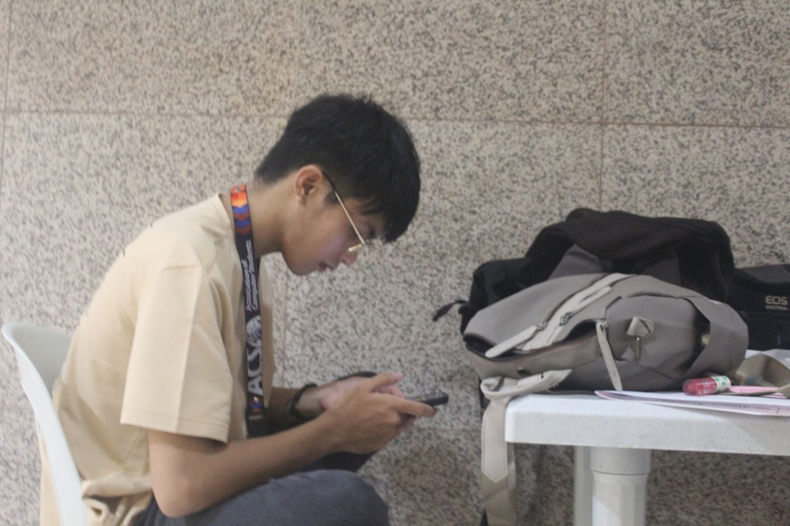

JOHN LLOYD C. CASTAÑEDA
STUDENT & ARTISTS
Hey there! I'm John Lloyd, currently navigating my sophomore year at Rizal Technological University, deep into the Bachelor of Science in Information Technology program.
Back in high school, I uncovered a knack for digital art, especially after getting my hands on a digital pen tablet during the pandemic. Despite dabbling in various art forms, digital artworks quickly became my go-to.
Senior High School introduced me to the world of visual arts through Drafting and Illustrations, fueling my passion for drawing. When it came time to decide on college, influenced by my two older brothers who graduated in Bachelor of Science in Information Technology, I followed suit. But here's the twist – my love for computer games played a pivotal role in shaping that decision.
As an avid gamer, I've not only become computer literate but have also developed a genuine interest in the vast realm of Information Technology. This convergence of technology and leisure has infused a unique perspective into my academic journey.
While my formal education might not be in the arts, the blend of my artistic background and gaming enthusiasm continues to shape my approach to problem-solving and innovation. As I progress through my BSIT program, I'm excited about the potential for a future career marked by a distinctive mix of creativity and technical proficiency, all influenced by my unique experiences. Cheers to embracing the exciting intersection of art and technology!